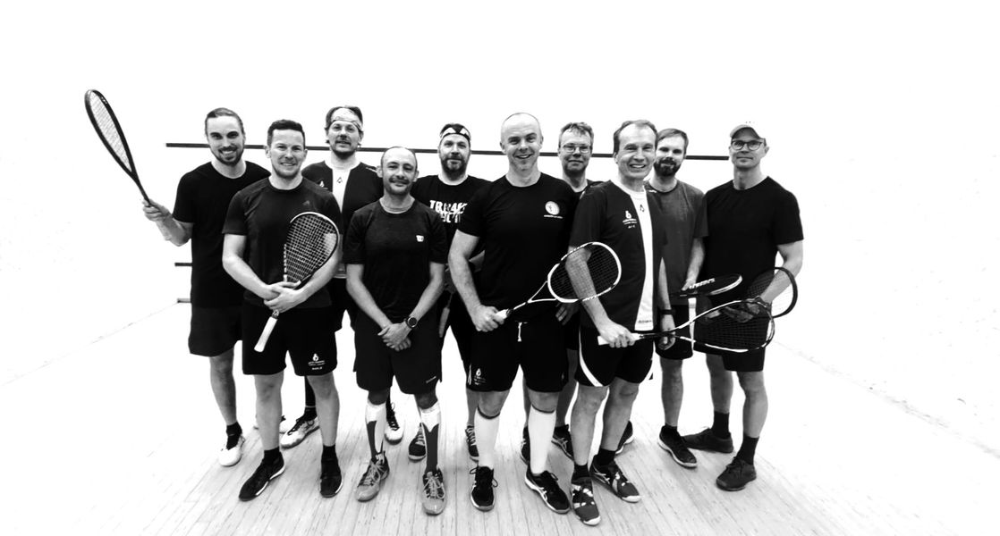
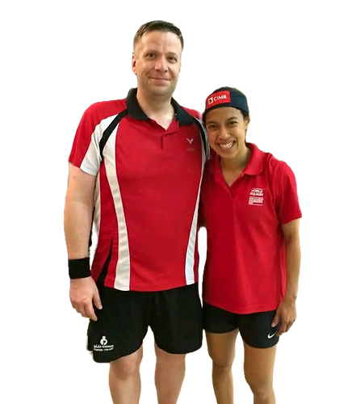

Jo vuodesta 1990
Esittely
Nääs-Squash on perinteinen tamperelainen squashseura, joka toivottaa tervetulleeksi lajin pariin niin uudet kuin vanhatkin kössinpelaajat. Kotikentät ovat Tampereen Tenniskeskus ja GOGO Park.
Näässistä löytää peliseuraa taitotasosta riippumatta. Nääs-Squash järjestää säännöllistä pelitoimintaa pääasiassa viikoittaisten seurailtojen muodossa. Tällöin kentät ovat seuran käytössä ja jäsenet kokoontuvat pelaamaan yhdessä rennoissa merkeissä.
Lisäksi järjestämme säännöllisesti lajitutustumisia, valmennusta, höntsyjä sekä kisamatkoja.
Nääs-Squash tarjoaa puitteet myös kilpailutoiminnan harrastamiselle eri tasoisille pelaajille. Osallistumme Suomen squashliigaan kolmella eri joukkueella ja sarjatasolla. Squashliiga on erinomainen tapa tutustua kilpasquashiin matalalla kynnyksellä ja kokeneempien joukkuetoverien opastuksella.
Seuran järjestämä kansallinen kilpailu Nääs-Cup kerää Suomen kössiharrastajat vuosittain Tampereelle. Perinteikäs kauden avaava turnaus on saanut legendaarisen maineen lajipiireissä.
Muiden mailapelien vanavedessä myös squashin harrastajamäärät ovat lisääntyneet viime vuosina. Squash antaa hikoilun ja rautaisen kunnon lisäksi onnistumisen tunteita jo ensimmäisestä pelikerrasta lähtien.
Jälkipelejä unohtamatta.

Liity mukaan
Täytä jäsenyyslomake alla olevasta linkistä.
Lähetämme laskun jäsenmaksusta sähköpostitse.
Täytä jäsenyyslomakeJäsenyys
Tennarin seuraillat lauantaisin 9 €/pelikerta. Lainamailat ja harjoituspallot veloituksetta.
GOGO Park -seuraillat torstaisin ja keskiviikkoisin 10 €/pelikerta. GOGO-jäsenet pelaavat ilman eri veloitusta.
Seuran tapahtumat, valmennus- ja kilpailutoiminta. Aktiivinen yli viidenkymmenen pelaajan yhteisö.
Varustehankintoja kuten palloja, grippejä ja peliasuja tehdään seuran kautta säännöllisesti.
Historia
Seuran mestaruuskilpailuja on pelattu vuodesta 1990.
Kotikentät
Hämeenpuisto 47, 33200 Tampere
Seuraillat lauantaisin klo 15–17
Toimelankatu 8, 33560 Tampere
Seuraillat keskiviikkoisin klo 11–12:30 ja torstaisin klo 17–19
Ota yhteyttä
Otamme mielellämme uusia jäseniä ja vastaamme kyselyihin.